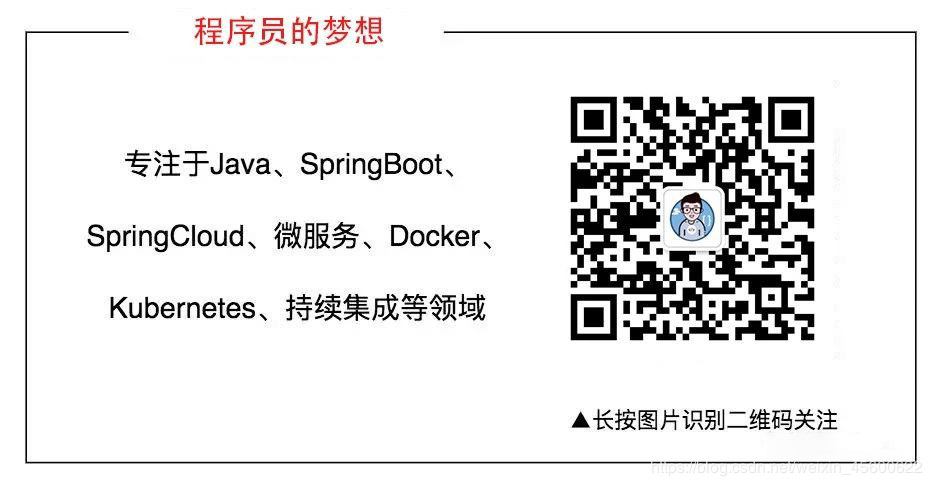

学习东西要知行合一，如果只是知道理论而没实践过，那么掌握的也不会特别扎实，估计过几天就会忘记，接下来我们一起实践来学习Spring事务的传播属性。
传播属性定义的是当一个事务方法碰到另一个事务方法时的处理行为，一共有七种行为，定义如下
| 传播性 | 值 | 描述 |
|---|---|---|
PROPAGATION_REQUIRED |
0 | 支持当前事务，如果没有就新建事务 |
PROPAGATION_SUPPORTS |
1 | 支持当前事务，如果没有就不以事务的方式运行 |
PROPAGATION_MANDATORY |
2 | 支持当前事务，如果当前没事务就抛异常 |
PROPAGATION_REQUIRES_NEW |
3 | 无论当前是否有事务，都会新起一个事务 |
PROPAGATION_NOT_SUPPORTED |
4 | 不支持事务，如果当前存在事务，就将此事务挂起不以事务方式运行 |
PROPAGATION_NEVER |
5 | 不支持事务，如果有事务就抛异常 |
PROPAGATION_NESTED |
6 | 如果当前存在事务，在当前事务中再新起一个事务 |
其实只看概念的话已经很直截了当了说明了每个传播性的作用，此时我们再用具体的例子演示一下每个传播性属性下的行为。
此次演示我们使用的是H2数据库，这个数据库是作用在内存里面的，所以对于我们演示事务效果来说正好，无需我们在进行其他的配置了，我们新建一个表。将下面语句放在schema.sql文件里面即可，SpringBoot程序在启动的时候就会自动为我们在内存里面建立这样的一个表。
CREATE TABLE FOO (ID INT IDENTITY, BAR VARCHAR(64));演示之前我们会定义两个类FooService和BarService。我们使用BarService里面的方法进行调用FooService中的方法。
在进行事务演示之前，其实可以分为以下几种情况，根据排列组合，我们可以得出以下八种情况
| 调用者是否有事务 | 调用者是否有异常 | 被调用者是否有异常 |
|---|---|---|
| 有 | 有 | 有 |
| 有 | 有 | 无 |
| 有 | 无 | 有 |
| 有 | 无 | 无 |
| 无 | 有 | 有 |
| 无 | 有 | 无 |
| 无 | 无 | 有 |
| 无 | 无 | 无 |
其中的RollbackException是我们自己定义的一个异常类
@Service
public class BarServiceImpl implements BarService{
@Autowired
private FooService fooService;
// PROPAGATION_REQUIRED演示 无事务
@Override
public void testRequiredNoTransactional() throws RollbackException {
fooService.testRequiredTransactional();
}
}
在BarService中定义两个方法，一个是带着事务的，一个是不带事务的
// 有事务
@Override
@Transactional(rollbackFor = Exception.class)
public void hasTransactional() throws RollbackException {
}
// 无事务
@Override
public void noTransactional() throws RollbackException {
}
接下来我们就根据俄上面定义的八种情况进行事务传播属性的学习。
PROPAGATION_REQUIRED在此传播属性下，被调用方是否新建事务取决去调用者是否带着事务。
想要了解这个传播属性的特性，其实我们演示上面八种情况的两个例子就够了
| 调用者是否有事务 | 调用者是否有异常 | 被调用者是否有异常 |
|---|---|---|
| 无 | 无 | 有 |
| 有 | 有 | 无 |
我们先来看一下被调用者的类的方法例子。
@Service
public class FooServiceImpl implements FooService {
@Autowired
private JdbcTemplate jdbcTemplate;
// REQUIRED传播属性-被调用者有异常抛出
@Override
@Transactional(rollbackFor = Exception.class,propagation = Propagation.REQUIRED)
public void testRequiredHasException() throws RollbackException {
jdbcTemplate.execute("INSERT INTO FOO (BAR) VALUES ("+Global.REQUIRED_HAS_EXCEPTION+")");
throw new RollbackException();
}
// REQUIRED传播属性-被调用者无异常抛出
@Override
@Transactional(rollbackFor = Exception.class,propagation = Propagation.REQUIRED)
public void testRequiredNoException() throws RollbackException {
jdbcTemplate.execute("INSERT INTO FOO (BAR) VALUES ("+Global.REQUIRED_NO_EXCEPTION+")");
}
}
接下来我们看一下调用者方法的例子
@Service
public class BarServiceImpl implements BarService{
@Autowired
private FooService fooService;
// 有事务
@Override
@Transactional(rollbackFor = Exception.class)
public void hasTransactional() throws RollbackException {
// 调用者有事务,抛异常 被调用者无异常
fooService.testRequiredNoException();
throw new RollbackException();
}
// 无事务
@Override
public void noTransactional() throws RollbackException {
// 调用者无事务,不抛异常 被调用者有异常
fooService.testRequiredHasException();
}
}
此时我们在程序调用时进行查询
String noException = Global.REQUIRED_NO_EXCEPTION;
String hasException = Global.REQUIRED_HAS_EXCEPTION;
try {
barService.noTransactional();
}catch (Exception e){
log.info("第一种情况 {}",
jdbcTemplate
.queryForObject("SELECT COUNT(*) FROM FOO WHERE BAR='"+hasException+"'", Long.class));
}
try {
barService.hasTransactional();
}catch (Exception e){
log.info("第二种情况 {}",
jdbcTemplate
.queryForObject("SELECT COUNT(*) FROM FOO WHERE BAR='"+noException+"'", Long.class));
}
查看打印出来的日志
2019-10-16 13:02:04.142 INFO 11869 --- [ main] c.e.t.t.TransactionApplication : 第一种情况 0
2019-10-16 13:02:04.143 INFO 11869 --- [ main] c.e.t.t.TransactionApplication : 第二种情况 0
我们看到我们都没有查到相应的数据，说明数据都回滚了。此时我们应该就理解了那句话支持当前事务，如果没有就新建事务。
PROPAGATION_SUPPORTS被调用者是否有事务，完全依赖于调用者，调用者有事务则有事务，调用者没事务则没事务。
接下来我们还是用上面的两个例子进行演示
| 调用者是否有事务 | 调用者是否有异常 | 被调用者是否有异常 |
|---|---|---|
| 无 | 无 | 有 |
| 有 | 有 | 无 |
接下来仍然是例子演示
被调用者，只是将@Transactional注解中的propagation属性更换为了Propagation.SUPPORTS
// SUPPORTS传播属性-被调用者有异常抛出
@Override
@Transactional(rollbackFor = Exception.class,propagation = Propagation.SUPPORTS)
public void testSupportsHasException() throws RollbackException {
jdbcTemplate.execute("INSERT INTO FOO (BAR) VALUES ('"+Global.SUPPORTS_HAS_EXCEPTION+"')");
throw new RollbackException();
}
// SUPPORTS传播属性-被调用者无异常抛出
@Override
@Transactional(rollbackFor = Exception.class,propagation = Propagation.SUPPORTS)
public void testSupportsNoException() throws RollbackException {
jdbcTemplate.execute("INSERT INTO FOO (BAR) VALUES ('"+Global.SUPPORTS_NO_EXCEPTION+"')");
}
调用者和上面的例子调用一样，我们直接查看执行效果
2019-10-16 13:50:27.738 INFO 12174 --- [ main] c.e.t.t.TransactionApplication : 第一种情况 1
2019-10-16 13:50:27.741 INFO 12174 --- [ main] c.e.t.t.TransactionApplication : 第二种情况 0
我们看到了在第一种情况下查到了数据，说明在第一种情况下被调用者是没有事务的。此时我们应该就理解了这句话 支持当前事务，如果没有就不以事务的方式运行。
PROPAGATION_MANDATORY依然是这两个例子进行演示
| 调用者是否有事务 | 调用者是否有异常 | 被调用者是否有异常 |
|---|---|---|
| 无 | 无 | 有 |
| 有 | 有 | 无 |
接下来是被调用者的代码例子
// MANDATORY传播属性-被调用者有异常抛出
@Override
@Transactional(rollbackFor = Exception.class,propagation = Propagation.MANDATORY)
public void testMandatoryHasException() throws RollbackException {
jdbcTemplate.execute("INSERT INTO FOO (BAR) VALUES ('"+Global.SUPPORTS_HAS_EXCEPTION+"')");
throw new RollbackException();
}
// MANDATORY传播属性-被调用者无异常抛出
@Override
@Transactional(rollbackFor = Exception.class,propagation = Propagation.MANDATORY)
public void testMandatoryNoException() throws RollbackException {
jdbcTemplate.execute("INSERT INTO FOO (BAR) VALUES ('"+Global.SUPPORTS_NO_EXCEPTION+"')");
}
调用者和上面的例子调用一样，我们直接查看执行效果
2019-10-16 13:58:39.178 ERROR 12317 --- [ main] c.e.t.t.TransactionApplication : org.springframework.transaction.IllegalTransactionStateException: No existing transaction found for transaction marked with propagation 'mandatory'
2019-10-16 13:58:39.276 INFO 12317 --- [ main] c.e.t.t.TransactionApplication : 第一种情况 0
2019-10-16 13:58:39.281 INFO 12317 --- [ main] c.e.t.t.TransactionApplication : 第二种情况 0
我们发现和我们推测一样，说明被调用者是不会自己新建事务的，此时我们应该就理解了这句话支持当前事务，如果当前没事务就抛异常。
PROPAGATION_REQUIRES_NEW此传播属性下，无论调用者是否有事务，被调用者都会新建一个事务
| 调用者是否有事务 | 调用者是否有异常 | 被调用者是否有异常 |
|---|---|---|
| 无 | 无 | 有 |
| 有 | 有 | 无 |
接下来我们演示代码。
被调用者
// REQUIRES_NEW传播属性-被调用者有异常抛出
@Override
@Transactional(rollbackFor = Exception.class,propagation = Propagation.REQUIRES_NEW)
public void testRequiresNewHasException() throws RollbackException {
jdbcTemplate.execute("INSERT INTO FOO (BAR) VALUES ('"+Global.REQUIRES_NEW_HAS_EXCEPTION+"')");
throw new RollbackException();
}
// REQUIRES_NEW传播属性-被调用者无异常抛出
@Override
@Transactional(rollbackFor = Exception.class,propagation = Propagation.REQUIRES_NEW)
public void testRequiresNewNoException() throws RollbackException {
jdbcTemplate.execute("INSERT INTO FOO (BAR) VALUES ('"+Global.REQUIRES_NEW_NO_EXCEPTION+"')");
}
调用者的例子和上面的相同，我们直接来看执行情况
2019-10-16 16:29:20.296 INFO 15553 --- [ main] c.e.t.t.TransactionApplication : 第一种情况 0
2019-10-16 16:29:20.298 INFO 15553 --- [ main] c.e.t.t.TransactionApplication : 第二种情况 1
我们发现和我们的推论是一样的，说明调用者的事务和被调用者的事务完全无关。此时我们应该就理解这句话了无论当前是否有事务，都会新起一个事务。
PROPAGATION_NOT_SUPPORTED无论调用者是否有事务，被调用者都不以事务的方法运行
同样是这两个例子
| 调用者是否有事务 | 调用者是否有异常 | 被调用者是否有异常 |
|---|---|---|
| 无 | 无 | 有 |
| 有 | 有 | 无 |
接下来验证我们的猜测
// NOT_SUPPORTED传播属性-被调用者有异常抛出
@Override
@Transactional(rollbackFor = Exception.class,propagation = Propagation.NOT_SUPPORTED)
public void testNotSupportHasException() throws RollbackException {
jdbcTemplate.execute("INSERT INTO FOO (BAR) VALUES ('"+Global.NOT_SUPPORTS_HAS_EXCEPTION+"')");
throw new RollbackException();
}
// NOT_SUPPORTED传播属性-被调用者无异常抛出
@Override
@Transactional(rollbackFor = Exception.class,propagation = Propagation.NOT_SUPPORTED)
public void testNotSupportNoException() throws RollbackException {
jdbcTemplate.execute("INSERT INTO FOO (BAR) VALUES ('"+Global.NOT_SUPPORTS_NO_EXCEPTION+"')");
}
然后查看执行结果
2019-10-16 16:38:35.065 INFO 15739 --- [ main] c.e.t.t.TransactionApplication : 第一种情况 1
2019-10-16 16:38:35.067 INFO 15739 --- [ main] c.e.t.t.TransactionApplication : 第二种情况 1
我们可以看到在最后两种情况都查到了数据，根据演示效果应该可以理解这句话了，不支持事务，如果当前存在事务，就将此事务挂起不以事务方式运行。
PROPAGATION_NEVER调用者有事务，被调用者就会抛出异常
| 调用者是否有事务 | 调用者是否有异常 | 被调用者是否有异常 |
|---|---|---|
| 无 | 无 | 有 |
| 有 | 有 | 无 |
这个就不演示，相信大家看到这里应该都会明白在第一种情况下我们是能够查到数据的。在第二种情况下由于调用者带着事务，所以会抛异常。
PROPAGATION_NESTED此传播属性下，被调用者的事务是调用者的事务的子集。
我们重点说一下NESTED的传播属性的特性
| 调用者是否有事务 | 说明 |
|---|---|
| 有 | 被调用者会新起一个事务，此事务和调用者事务是一个嵌套的关系 |
| 无 | 被调用者会自己新起一个事务 |
关于什么是嵌套事务的关系，我们用下面三个例子能够进行演示。
| 调用者是否有事务 | 调用者是否有异常 | 被调用者是否有异常 |
|---|---|---|
| 无 | 无 | 有 |
| 有 | 有 | 无 |
| 有 | 无 | 有 |
接下来我们编写具体的代码
// NESTED传播属性-回滚事务
@Override
@Transactional(rollbackFor = Exception.class,propagation = Propagation.NESTED)
public void testNestedHasException() throws RollbackException {
jdbcTemplate.execute("INSERT INTO FOO (BAR) VALUES ('"+Global.NESTED_HAS_EXCEPTION+"')");
// TransactionAspectSupport.currentTransactionStatus().setRollbackOnly();
throw new RollbackException();
}
// NESTED传播属性-不回滚事务
@Override
@Transactional(rollbackFor = Exception.class,propagation = Propagation.NESTED)
public void testNestedNoException() throws RollbackException {
jdbcTemplate.execute("INSERT INTO FOO (BAR) VALUES ('"+Global.NESTED_NO_EXCEPTION+"')");
}
然后接下来的调用者也会有点区别
@Override
@Transactional()
public void hasTransactionalNoException() throws RollbackException {
// NESTED传播属性 - 调用者有事务,不抛异常 被调用者有异常
jdbcTemplate.execute("INSERT INTO FOO (BAR) VALUES ('"+Global.NESTED_HAS_EXCEPTION_TWO+"')");
fooService.testNestedHasException();
}
然后执行效果
2019-10-16 18:01:06.387 INFO 17172 --- [ main] c.e.t.t.TransactionApplication : 第一种情况 0
2019-10-16 18:01:06.389 INFO 17172 --- [ main] c.e.t.t.TransactionApplication : 第二种情况 0
2019-10-16 18:01:06.390 INFO 17172 --- [ main] c.e.t.t.TransactionApplication : 第三种情况 1
可以看出来嵌套事务的本质就是外层会影响内层，内层不影响外层。而REQUIRES_NEW则是互不影响。
到现在我们已经全部分析完了七种传播属性，从写这篇文章开始到结束其中也碰到过一些坑，有些是不自己实践一遍是根本不知道的，所以我还是建议读者看完这篇文章以后自己进行实践，演示各种情况，只有这样才能够烂熟于心。
关注微信公众号【程序员的梦想】，专注于Java，SpringBoot，SpringCloud，微服务，Docker以及前后端分离等全栈技术。
